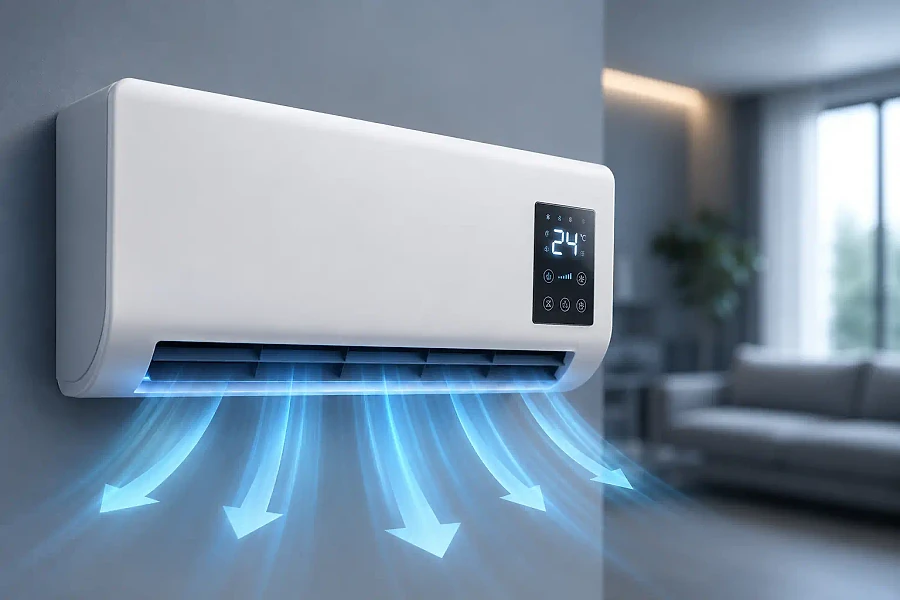
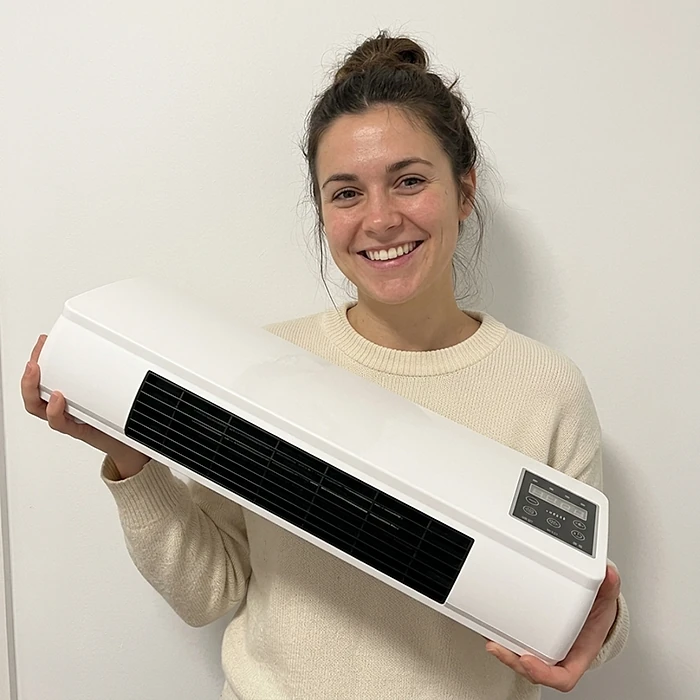

Was ist LifeGauge Breeze und wie funktioniert es?
LifeGauge Breeze ist ein kompaktes Klimagerät, das laut der offiziellen Website sowohl kühlen als auch heizen kann. Es richtet sich an Menschen, die ein angenehmes Raumklima möchten, ohne eine fest eingebaute Klimaanlage installieren zu lassen.
Nach Angaben des Herstellers wird das Gerät nicht von einem Fachbetrieb montiert. Es wird ausgepackt, aufgestellt oder angebracht und an eine normale Steckdose angeschlossen. Danach wählt man über das Touch-Display oder die Fernbedienung den gewünschten Modus.
Die Funktionsweise beschreibt die offizielle Website so: Das Gerät zieht Raumluft an, bringt sie über sein internes System auf die gewünschte Temperatur und gibt sie wieder in den Raum ab. Im Heizmodus wird die Luft erwärmt, im Kühlmodus heruntergekühlt.
Laut Hersteller ist der Breeze für Räume bis 55 m² ausgelegt, etwa für Wohnzimmer, Schlafzimmer oder das Homeoffice. Er bietet sieben Betriebsmodi, darunter einen Eco-Sparbetrieb und einen leisen Nachtmodus.
Als technische Daten nennt die Website Abmessungen von 54,5 × 19,5 × 12,5 cm, ein Gewicht von 1,8 kg und eine Nennspannung von 220 V. Damit ist das Gerät deutlich kleiner und leichter als eine klassische Split-Klimaanlage.
Besonders interessant ist der Breeze laut den Kundenbewertungen für Mieter, die keine feste Anlage einbauen dürfen, sowie für Räume, die nur zeitweise gekühlt oder beheizt werden sollen. Das Gerät kann bei Bedarf von Raum zu Raum mitgenommen werden, etwa tagsüber ins Büro und abends ins Schlafzimmer.
Wie bei jedem Gerät dieser Art hängen die Ergebnisse von der Raumgröße, der Dämmung, der Außentemperatur und der Nutzung ab. Ein kompaktes Gerät kann eine fest installierte Klimaanlage in großen oder schlecht gedämmten Räumen nicht in jedem Fall ersetzen. Ergebnisse können je nach Raum und Wetter variieren.
LifeGauge Breeze Funktionen
Laut der offiziellen Website bietet der LifeGauge Breeze die folgenden Funktionen:
Kühlen und Heizen: ein Gerät für Sommer und Winter, statt zwei getrennter Geräte.
7 Betriebsmodi: vom schnellen Kühlen bis zum sanften Nachtmodus.
Eco-Sparbetrieb: soll laut Hersteller den Stromverbrauch im Alltag niedrig halten.
Leiser Betrieb: im Nachtmodus so unauffällig, dass er laut Website den Schlaf nicht stört.
Fernbedienung und Touch-Display: Steuerung bequem vom Sofa aus oder direkt am Gerät.
Sicherheitsabschaltung: integrierte Schutzfunktionen für den sorgenfreien Betrieb.
Der Hersteller nennt außerdem eine Luftfilterung und die Möglichkeit, die Luftfeuchtigkeit und die Temperatur nach Wunsch einzustellen. Das Gerät ist für Räume bis 55 m² ausgelegt. Laut den technischen Daten auf der Website wird es mit 220 V betrieben und arbeitet intern mit Gleichstrom (DC). Das Volumen gibt der Hersteller mit rund 13.284 cm³ an, das Gewicht mit 1,8 kg.
Wichtig für die Einschätzung: Konkrete Werte zur Kühl- und Heizleistung in Watt oder zum Energieverbrauch nennt die offizielle Website nicht. Wer das Gerät mit anderen vergleichen möchte, sollte diese Angaben beim Kundenservice erfragen.
LifeGauge Breeze Anwendung
Laut der offiziellen Website ist der LifeGauge Breeze in drei Schritten einsatzbereit: Gerät dort platzieren, wo es gebraucht wird, an die nächste Steckdose anschließen und den gewünschten Modus wählen.
Für die Inbetriebnahme sind nach Angaben des Herstellers kein Werkzeug und kein Handwerker nötig. Die Website gibt an, dass die meisten Nutzer das Gerät in wenigen Minuten startklar hatten.
Die Steuerung erfolgt über das Touch-Display am Gerät oder über die mitgelieferte Fernbedienung. Dort wählen Sie zwischen Kühlen, Heizen und den weiteren Modi und stellen die gewünschte Temperatur ein. Für die Nacht empfiehlt sich laut Hersteller der leise Nachtmodus, der besonders unauffällig arbeitet.
Achten Sie darauf, dass die Luft vor und hinter dem Gerät frei zirkulieren kann und dass es nicht abgedeckt wird. Schließen Sie Fenster und Türen des Raums, damit die gekühlte oder erwärmte Luft im Raum bleibt und das Gerät effizient arbeiten kann.
Lesen Sie vor der ersten Nutzung die beiliegende Anleitung, insbesondere die Sicherheitshinweise zum Betrieb an der Steckdose. In einer Kundenbewertung auf der offiziellen Website wird erwähnt, dass die Anleitung ausführlicher sein könnte; bei Fragen hilft der Kundenservice per E-Mail gerne weiter.
LifeGauge Breeze – Rückerstattung
Laut der offiziellen Website wird der LifeGauge Breeze mit einer 30-Tage-Geld-zurück-Garantie angeboten. Wer nach einem Monat nicht zufrieden ist, kann das Gerät nach Angaben des Herstellers zurücksenden und erhält den vollen Kaufbetrag erstattet.
Zusätzlich nennt die Website eine Herstellergarantie von zwei Jahren. Sie betrifft Mängel am Gerät und ist von der freiwilligen Geld-zurück-Garantie zu unterscheiden.
Als Anbieter gibt die Website die LifeGauge Wellness, LLC mit Sitz in Manassas, Virginia, in den USA an. Der Kundenservice ist per E-Mail in allen Sprachen erreichbar; die Telefonnummern werden laut Website nur auf Englisch betreut.
Für die genauen Bedingungen der Rücksendung verweist die Website auf eigene Seiten zum Rückgaberecht und zu den Allgemeinen Geschäftsbedingungen. Dort steht auch, wohin das Gerät zurückgeschickt werden muss. Laut den häufig gestellten Fragen genügt es, das Gerät einfach zurückzusenden, wenn es Sie nicht überzeugt. Klären Sie die Rücksendung am besten vorher per E-Mail mit dem Kundenservice ab, damit sie schnell zugeordnet werden kann.
Verbraucher in der EU haben außerdem ein gesetzliches Widerrufsrecht bei Online-Käufen. Die Garantie des Herstellers gilt zusätzlich und ersetzt dieses Recht nicht.
Bewahren Sie die Originalverpackung und Ihre Bestellbestätigung auf. So können Sie eine Rücksendung innerhalb der 30 Tage schnell einleiten. Bei Käufen über andere Händler ist nicht sicher, dass diese Garantie gilt.
LifeGauge Breeze Kundenbewertungen
-
Lena K.Verifizierter Kauf
„Im Sommer wird es bei uns unerträglich, und eine Splitanlage ist verboten. Ventilatoren haben nur warme Luft herumgewirbelt. Der Breeze kühlt das Wohnzimmer in Minuten und lässt sich abends mühelos ins Schlafzimmer rollen – und das fast lautlos.“
-
Sofia R.Verifizierter Kauf
„Eine fest eingebaute Anlage war mir immer zu teuer und aufwendig. Hier war es buchstäblich: auspacken, einstecken, fertig. Kein Werkzeug, kein Handwerker – und alles bequem per Fernbedienung von der Couch aus.“
-
Markus T.Verifizierter Kauf
„Mein Arbeitszimmer heizt sich im Sommer stark auf. Der Breeze hält es angenehm, ohne dass ich mich vom Geräusch gestört fühle. Der Eco-Modus reicht mir völlig aus.“
LifeGauge Breeze – Wo kaufen?
Der LifeGauge Breeze ist laut Hersteller über die offizielle Website erhältlich. Dort finden Sie die aktuelle Verfügbarkeit, die technischen Daten, die Antworten auf häufige Fragen sowie die Bedingungen der Geld-zurück-Garantie an einem Ort. Auch die Kontaktdaten des Kundenservice sind dort angegeben.
Die offizielle Website nennt keine Elektronikmärkte, Baumärkte oder großen Onlinehändler als Verkaufsstellen. Ähnlich aussehende Geräte auf Marktplätzen stammen daher nicht unbedingt vom Hersteller und können andere technische Eigenschaften haben.
Ein Kauf direkt beim Hersteller hat den Vorteil, dass die 30-Tage-Geld-zurück-Garantie und die zweijährige Herstellergarantie greifen und der Kundenservice bei Fragen zur Bestellung oder Bedienung erreichbar ist. Bei Drittanbietern ist das nicht in gleicher Weise gegeben.
Achten Sie beim Besuch der Website auf eine sichere Verbindung und lesen Sie vor dem Kauf die Seiten zu Rückgaberecht und Allgemeinen Geschäftsbedingungen. So wissen Sie genau, was Sie erhalten und wie eine Rücksendung abläuft. Notieren Sie sich außerdem die Kontaktdaten des Kundenservice, damit Sie bei Fragen zur Lieferung oder zur Inbetriebnahme schnell Hilfe bekommen.
Um sicherzugehen, dass Sie das Originalprodukt erhalten, besuchen die meisten Nutzer die offizielle Website.
Ist LifeGauge Breeze Betrug?
Nach den verfügbaren Informationen gibt es keinen Hinweis darauf, dass der LifeGauge Breeze Betrug ist. Das Gerät wird über eine eigene Website verkauft, auf der technische Daten, Garantiebedingungen und ein verantwortliches Unternehmen mit Adresse genannt werden.
Als Anbieter tritt die LifeGauge Wellness, LLC aus Manassas in den USA auf. Die Website nennt eine Postadresse, Telefonnummern und eine E-Mail-Adresse für den Kundenservice sowie Seiten zu Datenschutz, Rückgaberecht und Versandrichtlinien.
Positiv sind die 30-Tage-Geld-zurück-Garantie und die zweijährige Herstellergarantie. Sie geben Käufern die Möglichkeit, das Gerät zu Hause auszuprobieren und es bei Unzufriedenheit zurückzugeben.
Realistisch bleiben sollte man bei der Leistung: Ein kompaktes Gerät mit 1,8 kg arbeitet anders als eine fest installierte Split-Klimaanlage. Konkrete Leistungsangaben in Watt fehlen auf der Website. Für kleinere und mittlere Räume kann es dennoch eine praktische Lösung sein.
Vorsicht ist vor allem bei Angeboten außerhalb der offiziellen Website geboten. Nachahmungen können anders gebaut sein, und bei solchen Käufen gelten die Garantien des Herstellers in der Regel nicht.
Wer direkt beim Hersteller bestellt, die Bedingungen liest und seine Erwartungen an die Raumgröße anpasst, geht beim Kauf des LifeGauge Breeze nach heutigem Stand kein besonderes Risiko ein. Ergebnisse können je nach Raum und Nutzung variieren.
Wer Produktdetails überprüfen oder die aktuelle Verfügbarkeit prüfen möchte, ist auf der offiziellen LifeGauge Breeze-Website am sichersten aufgehoben.
